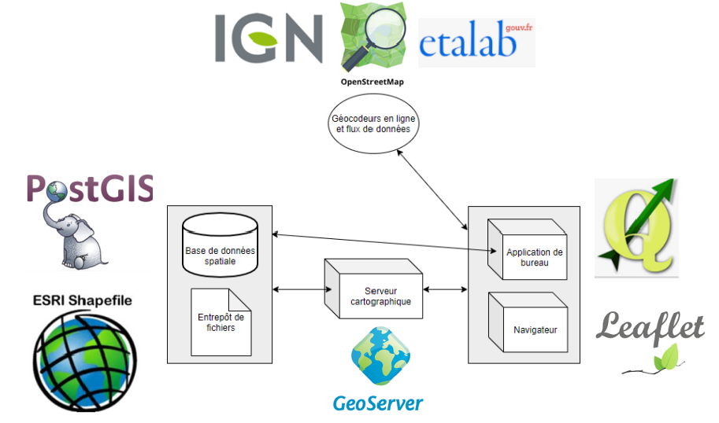

Comment s’articulent ces outils et acteurs autour de la géographie?¶
Parcequ’un schéma vaut mieux qu’un long discours¶
Un petit discours quand même¶
Les bases de données ou entrepôts de fichier peuvent être lus par un serveur cartographique ou par une application de bureau ou un logiciel SIG.
Le serveur cartographique (geoserver) accède à des bases de données ou des entrepôts de fichier. Il peut alors fournir des données à un navigateur ou à une application de bureau.
Le navigateur (utilisant Leaflet ou OpenLayers) peut récupérer les données depuis le serveur cartographique ou depuis des serveurs tiers (API de Geocodage, fonds de carte libres [OSM], API cartographiques[IGN, Google])
L”application de bureau (QGis, Geoconcept, Mon géocodeur…) peut accéder aux mêmes données que le navigateur, mais elle peut aussi se connecter directement à une base de données ou un entrepôt de fichier.